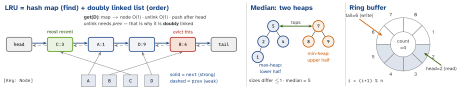

cs · folio
In one line: Name the operation that must be O(1), pick the structure whose invariant makes it cheap, and when no single structure does all of them, compose two that index the same nodes (hash map for find, list for order; heap for extreme, array for random). Then name the price: memory, amortised vs worst case, thread safety.
Download PDF Print view LaTeX source


Every access — read or write — moves the node to the front; a full put evicts the tail and deletes its key from the map (so a node stores its key). With sentinel head/tail nodes (as drawn) the nil branches below disappear.
final class LRUCache<Key: Hashable, Value> {
private final class Node { let key: Key; var value: Value
var next: Node?; weak var prev: Node? // weak: no cycle
init(_ k: Key, _ v: Value) { key = k; value = v } }
private var map: [Key: Node] = [:]; private let capacity: Int
private var head: Node?, tail: Node? // head = newest
init(capacity: Int) { precondition(capacity > 0); self.capacity = capacity }
func get(_ k: Key) -> Value? {
guard let n = map[k] else { return nil }
unlink(n); pushFront(n); return n.value } // a read counts
func put(_ k: Key, _ v: Value) {
if let n = map[k] { n.value = v; unlink(n); pushFront(n); return }
if map.count >= capacity, let old = tail { unlink(old); map[old.key] = nil }
let n = Node(k, v); map[k] = n; pushFront(n) }
private func unlink(_ n: Node) {
if let p = n.prev { p.next = n.next } else { head = n.next }
if let x = n.next { x.prev = n.prev } else { tail = n.prev }
n.prev = nil; n.next = nil }
private func pushFront(_ n: Node) {
n.next = head; if let h = head { h.prev = n } else { tail = n }; head = n }
}Thread-safe: OSAllocatedUnfairLock (iOS 16) / Mutex (iOS 18), or an actor (outside calls become async). A read is a write: no reader–writer lock with parallel gets (Java: on an access-ordered map “merely querying the map with get is a structural modification”).
Find + order, already composed
| type | finds | orders | as an LRU |
|---|---|---|---|
Java LinkedHashMap | hash | DLL | (n, 0.75f, true) = access order; removeEldestEntry runs after each insert. Android LruCache = this + synchronized |
Python OrderedDict | dict | DLL | move_to_end(k), popitem(last=False); keeps dict’s big-O |
Redis allkeys-lru | keyspace | none | samples 5 keys + a candidate pool: exact LRU “costs more memory” |
| Redis sorted set | hash | skip list | by score, O(log N): the sliding log below |
Swift OrderedDictionary | hash index | array | removeValue(forKey:) O(count): not O(1); nor key array + dict |
Access: move the node from lists[f] to the front of lists[f+1]; if lists[f] empties and f == minFreq, minFreq += 1; a new key resets minFreq = 1. Plain LFU never forgets a once-hot key: Redis keeps a 0–255 logarithmic (Morris) counter per key and decays it every minute.
push(x): mins.append(min(x, mins.last ?? x)); pop pops both. The O(1)-extra-space variant stores 2x - min and can overflow.
Push to inbox. Pop from outbox; if empty, move all of inbox over (reverses order). Each element moves once ⇒ O(1) amortised, O(n) worst on the refill pop.
Delete = swap with last, pop, fix the moved index. Not a Set: its randomElement() is O(n) (not a RandomAccessCollection).
| sliding log | Deque of timestamps; drop ≤ now-W, allow if count < limit | exact; O(limit) memory per key |
| sliding counter | prev · (W - elapsed)/W + cur: 42 · 45/60 + 18 = 49.5 of 50 | 2 ints; Cloudflare: 0.003 % wrong over 400 M requests |
| token bucket | tokens = min(b, tokens + Δt · r), lazily on each call; take 1 | 2 numbers; starts full (RFC 2697): bursts ≤ b |
| fixed window | one counter per window | 2× limit across a boundary |
Shared store: fixed window = INCR ip:<sec> + EXPIRE in MULTI or Lua (a crash between them leaks the key). Sliding log = sorted set: ZREMRANGEBYSCORE · ZCARD · ZADD, O(log N + M), in one Lua
script — MULTI only queues, it cannot branch on the count. Reject: 429 + Retry-After (seconds or a date).
Walk the prefix O(p); either DFS the subtree (slow for short prefixes) or store the top-k completions at every node, updated on insert — reads O(p), memory ×k. Node children: [Character: Node] or a 26-array.
Push into low if ≤ its max, else high; rebalance so low.count is high.count or +1. Median = low.max, or the mean of both tops. swift-collections Heap (1.1+) is a min-max heap: min/max O(1), insert/popMin/popMax O(log n) — one type for both halves. A sliding-window median must also delete, and removeAll(where:) is O(n): delete lazily (mark, discard when it surfaces).
head == tail: full or empty — keep a count, leave a slot free, or use free-running counters (Linux kfifo: len = in - out, slot in & mask, size 2k; one reader + one writer, no lock). Overwrite-oldest for “last N” logs, reject-when-full for producer–consumer. Hits in the last W seconds: a ring of W per-second buckets, each stamped with its second — reset a stale one before counting. Swift: Deque grows; RigidDeque (swift-collections 1.7) never resizes.
More shapes
| must be fast | invariant that gives it |
|---|---|
| max of a sliding window | deque of indices, values decreasing: pop the back while ≤ the new value, pop the front when it leaves; each index in and out once ⇒ amortised O(1) |
| k largest of a stream | min-heap of size k, pop when count > k: root = k-th largest; O(n log k) time, O(k) memory |
| k most frequent | count map + that size-k heap keyed by count |
| ordered iteration, ranges | balanced BST / skip list / sorted array |
| “seen?”, tiny memory | Bloom filter (false positives only) |
| key → server, few moves | consistent-hash ring + virtual nodes |
| expiry (TTL) | check on read; in deadline order: min-heap. Redis: passive on access + active random sampling |
Traps
- Reordering only on
put; a singly linked list (unlink O(n)); strongprev(retain cycle). Array.removeFirst(): O(n) per call.Deque.popFirst(): O(1) only while its storage is unshared — after a copy, O(count).- Amortised is not bounded: a refill or resize on the audio/render thread — pre-size, or
RigidDeque(traps when full). - Sorted-set members are unique strings: two hits with the same timestamp count once — add a request id.
NSCacheis no LRU: limits “not strict”, eviction order “not guaranteed”; keys are objects (NSString).
Remember
One structure finds, the other orders — and both point at the same node. In an LRU a read is a write.